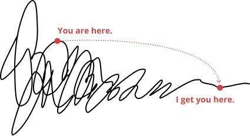

When something important is stuck, I make it happen.
Anything valuable in your business runs across a complex ecosystem of people, processes, tools, and products. I find what's actually broken and why, then build the right solution to unleash your momentum.
Get Clarity The 15–30 day diagnostic. Sometimes it's all you need.
Why are you stuck?
Not because your vision is wrong. Or that your team isn't smart. It's that people and tools get assigned a function, and no one is responsible for the connective tissue in between. You have an ecosystem-shaped problem that a function-shaped person or process just can't fix. Here's what I usually see.
The initiative that goes nowhere
Everyone agrees the product, brand, website, system, etc. needs to change. But nothing's shipped, and no one knows why.
→ Read MoreSmart team, no movement
Every function is working hard, but decisions just keep looping in silos. Nothing connects. Nothing changes.
→ Read MoreBig vision, no roadmap
Real budget, smart people, great vision—but the team doesn't know where to start or what to prioritize.
→ Read MoreThe clock is ticking …
An investor, a board member, an executive, a manager or even your client has a deadline—so staying stuck is about to get expensive.
→ Read More“Sarah was a conductor. She knew where to take us and how to get us there.”
Andrea Lim · Digital Communications Manager · LEXUS
What I am vs. what you might think
| What you might think | What I really am |
|---|---|
| Part-time specialist juggling multiple clients | Dedicated consultant focused fully on your priorities |
| Hands-off advisor who provides guidance but not execution | Embedded partner driving day-to-day progress alongside your team |
| An outside consultant who sees part of the picture | The person who is always reading the whole picture—product, people, processes |
| Brings expertise but doesn't deeply integrate | Senior-level experience with fresh insights and immediate impact that keeps running after I'm gone |
“Sarah's biggest strength is her ability to bring clarity and momentum to fast-moving environments.”
Mark Becker · Head of Strategy and Operations · MOTIVE LABS